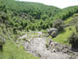
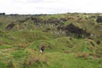
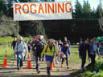
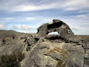
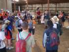
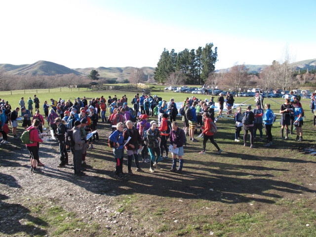
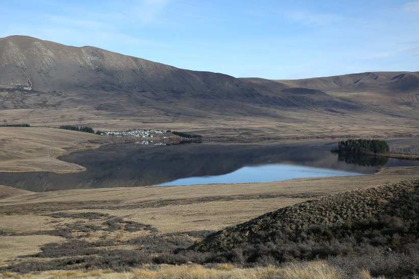

On the Day
Roxburgh Ramble
NZ Championships 2003

Views of the Course
Roxburgh Ramble
NZ Championships 2003

NZ Championships 2004
Wairamarama
Auckland

Heights of Winter 2004

NZ Championships 2005
Nenthorn Nemesis
Middlemarch

Australian Champs 2005
Over the Border
Queensland

Marlborough 2005
B-Hynd

Wairewa 2006
Little River

New Zealand Champs 2007
Peggioh Merry-Go-Round
Marlborough

New Zealand Champs 2009
WaikouWander
East Otago

Heights of Winter 2015
Blythe Downs and Ups
North Canterbury

Heights of Winter 2016
Hakatere
Canterbury